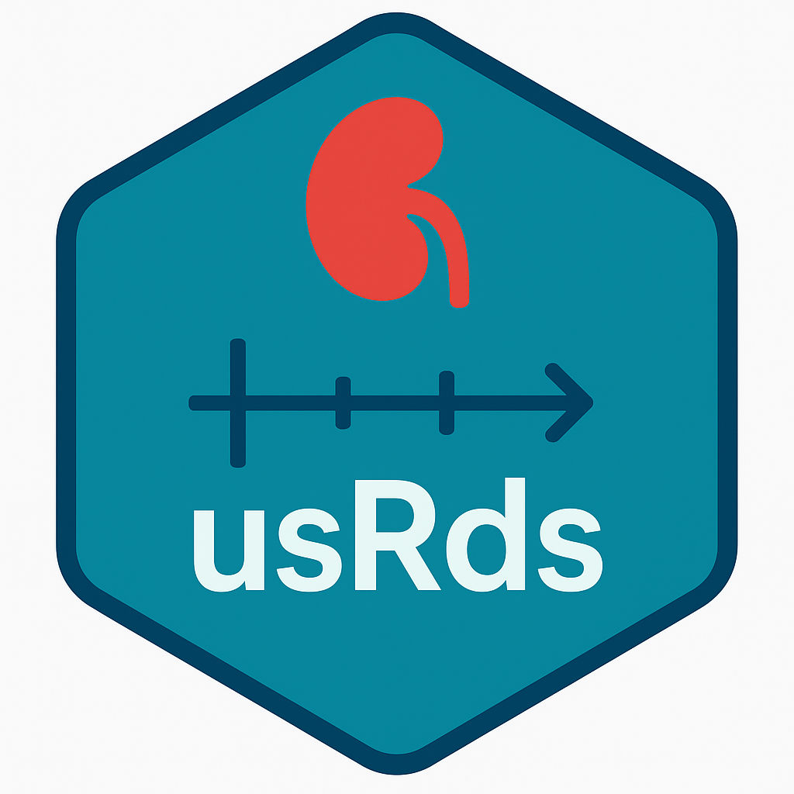

Data protection and security
Source:vignettes/articles/data-protection.Rmd
data-protection.RmdThis page is a stub. It sets out the rules that cover USRDS data, the ways data most often leaks during an analysis, and what usRds does about them today. It will grow as the package adds its own data-safety checks (see issue #49).
The rules
USRDS files are patient-level records released under a data use agreement (DUA). Your DUA is the rule that applies. This page does not replace it, and nothing in usRds makes an analysis compliant on its own. If this page and your DUA disagree, follow your DUA.
Most DUAs set rules on three things:
- Where the data may be stored. Only on the systems the DUA approves.
- Who may see it. Only the people named on the DUA.
- What may be shared. Usually only aggregate results, with small cells suppressed. The CMS Cell Size Suppression Policy, which applies to Medicare data, does not allow cells of 1 to 10 to be shown, or values from which such a cell could be worked out.
The risks
Data rarely leaks through one dramatic mistake. It usually leaks through an ordinary step in the work that makes a copy somewhere the DUA does not cover.
Copies you did not count as data
Parquet files made by convert_usrds_to_parquet(),
extracts saved as .rds, .csv or
.parquet, and cohort data frames are all USRDS data under
your DUA, just like the original SAS and CSV files. Keep every copy
inside the approved storage location.
Folders that sync or back up
A folder on a network share, a mapped drive, or a folder synced by a service such as OneDrive or Dropbox sends its files off your machine, whatever program wrote them. Backup services do the same. Make sure every folder you read from or write to, and any service that syncs or backs it up, is approved for USRDS data.
Data committed to a code repository
A data file committed to git is copied to every clone and to any remote such as GitHub, and it stays in the repository’s history even after you delete it. Keep the USRDS folder outside any git repository. If data files do have to sit inside a project folder, add ignore rules before the first commit, for example:
# .gitignore: never commit data
*.sas7bdat
*.parquet
*.csv
*.rds
*.RData
*.rdaAdapt the list to your project: a rule such as *.csv
also ignores public CSV files you may want to commit. Check
git status before each commit.
The saved workspace and history
An .RData file saved when R closes can hold every
patient-level data frame from the session, and .Rhistory
can hold values you printed. In RStudio, set Tools > Global
Options > General > Save workspace to .RData on exit to
Never, and turn off Restore .RData into workspace
at startup.
Paths in shared code
A data path written into a shared script can reveal where restricted
data is stored, and it breaks the script on anyone else’s machine. Call
set_USRDS_wd() once (or with permanent = TRUE)
instead.
Small cells in results
Tables, figures and model output can identify people when counts are small, even though they contain no identifiers. Check every output against the cell size rule in your DUA before you share it.
Web tools and AI assistants
Pasting rows, uploading files, or sharing screenshots of USRDS data with a web service, including an AI coding assistant, sends the data to that service. Do not do it unless your DUA allows it. Code, error messages with values removed, and made-up example data are safer ways to get help.
What usRds does today
-
It reads only the folder you name.
set_USRDS_wd()records the folder in the environment variableUSRDS_WDand maps the files in it by name. WhenUSRDS_WDis already set, loading the package maps the same folder again. Mapping reads file names only, not file contents. - It has no upload or telemetry feature. usRds makes no network connections of its own.
-
It writes only where you tell it to.
-
convert_usrds_to_parquet()writes Parquet files to thetarget_diryou give it, and nowhere else. -
set_USRDS_wd(permanent = TRUE)adds one line to your~/.Renvironfile: the folder path, not any data. With the defaultpermanent = FALSE, nothing is written.
-
-
Results stay in your R session until you save them.
Data frames returned by the
get_*()and cohort functions are patient-level. -
It can check a project for data files.
check_repo_for_usrds_data()lists files in a project folder that look like USRDS data: data file types such as.sas7bdatand.parquet, files named like USRDS files, and text files with aUSRDS_IDcolumn. In a git repository it checks the files git would commit, so untracked files listed in.gitignoreare not reported. A file git already tracks is still reported:.gitignoredoes not untrack it, so remove it from git withgit rm --cached, and treat data that was already pushed as a disclosure. It reads file names and header lines only, and reports paths only. Run it before each commit until the automatic checks below exist.
What it does not do yet: usRds does not check whether your folders
are synced or shared, does not check for data in a git repository unless
you run check_repo_for_usrds_data(), and does not check
whether a result has small cells. Those checks are your responsibility
for now.
Planned protections
The plan in issue #49 adds checks to the package itself. Names are provisional and none of these exist yet:
- a read-only data-safety check when the package is attached, which
notes missing protections in a git repository and warns (by path only)
about data-like files that would be committed; turn it off with
options(usRds.safety_check = FALSE); - the same check in
set_USRDS_wd()andconvert_usrds_to_parquet(); - opt-in helpers to add ignore rules and a pre-commit check to a project;
-
check_small_cells(), which reports cells below a threshold (fewer than 11 by default) in data frames, tables, plots and survival fits, without changing them.
This page will be updated as each one is added.